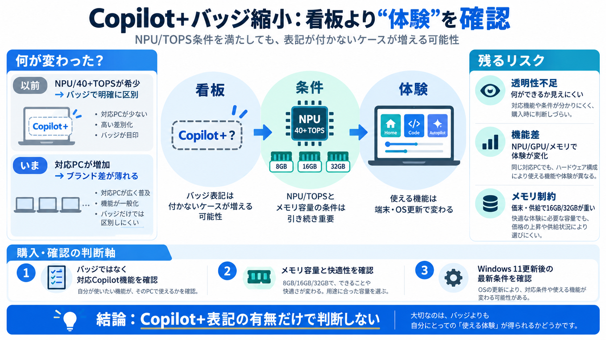

Microsoft is reportedly ditching its Copilot+ PC branding for Windows 11 devices
The report also notes that NVIDIA hasn't adopted the whole Copilot+ PC branding for its upcoming RTX Spark laptops, anot…

ラベルが薄れる
端末条件（NPU/TOPS）を満たしていても、以前ほど「Copilot+」のバッジが付かない傾向が報じられています。
選び方が曖昧に
Copilot+は本来、「端末側のAI対応」をわかりやすく示すバッジでした。ところが約2年後、要件を満たし得るPCでも表記が省かれるケースが出ています。
性能は同じ、看板は別
要件（NPUやTOPS）と、体感（使えるCopilot機能）が常に1対1とは限らない可能性があります。見える「看板」が整理されても、体験の範囲は端末次第で変わり得ます。
最初の差別化軸
Copilot+は、主に「端末側でAIを動かせる」ことを目印にしていました。NPU有無やTOPSの目安が、差別化の中心です。
「呼ばない」が確認される
Surface CVPのBrett Ostrum氏が、要件を満たす端末でも「Copilot+ PCs」とは呼ばない趣旨を語ったと報じられています。
差別化の根が薄い
報道の推測では、「要件を満たすPCが増え、ブランドでの差が小さくなった」ことが背景にあり得ます。
ブランド→体験へ
Copilot機能を止めたわけではなく、Windows 11内での扱いを調整しつつ、機能群（Home / Code / Autopilotなど）を強化していると報じられています。
“要件＝同等”ではない
バッジが外れるなら、要件（NPU/TOPS）を満たすのに「以前と同じ体験」とは限らない可能性があります。機能は端末構成やOS側最適化に依存し得ます。
メモリが足かせに
メモリ供給制約や価格上昇で、16GB/32GBが重くなり得ます。入力データでは「32GB推奨が消える」など、表示・設計に影響があった可能性が示唆されています。
見える範囲が縮む
公式理由が明確でないため、ユーザーは「なぜ？」と「何が変わった？」を推測することになります。バッジ縮小は、期待と実態のギャップ（不透明さ）を増やす恐れがあります。
判断軸を切り替える
Copilot+のバッジを見なくても、AI体験が“消える”とは限りません。代わりに、端末スペックだけでなく「対応するCopilot機能」と「動作条件（更新）」を確認する姿勢が有効です。
参照先（入力データ要約）
本デッキは、ユーザー提供の入力文と「Web検索からの要約（Windows Central / PCWorld / TweakTownなど）」を圧縮して整理しています。
The report also notes that NVIDIA hasn't adopted the whole Copilot+ PC branding for its upcoming RTX Spark laptops, anot…
This pretty much tarnished the Copilot+ PC brand, and over the last two years more and more OEMs have dropped the monike…
### In summary: PCWorld reports that Microsoft appears to be quietly retiring its Copilot+ PC branding, with new Surfa…
NPUs: Specialized chips capable of at least 40 TOPS, enabling AI tasks like real-time translation, image generation, and…
Windows 11 PCs from Surface offer AI-powered tools. The AI-features and functionality differ from Copilot+ PCs. Devices…